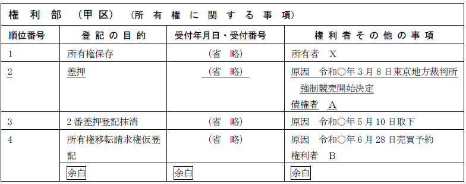
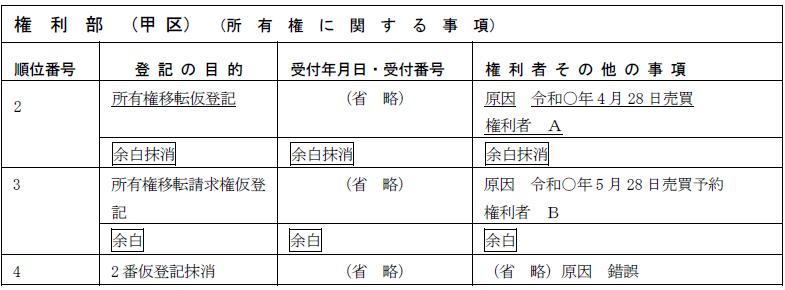
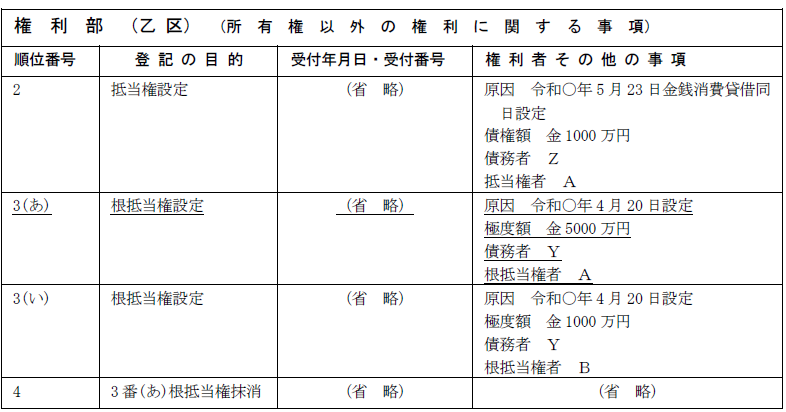
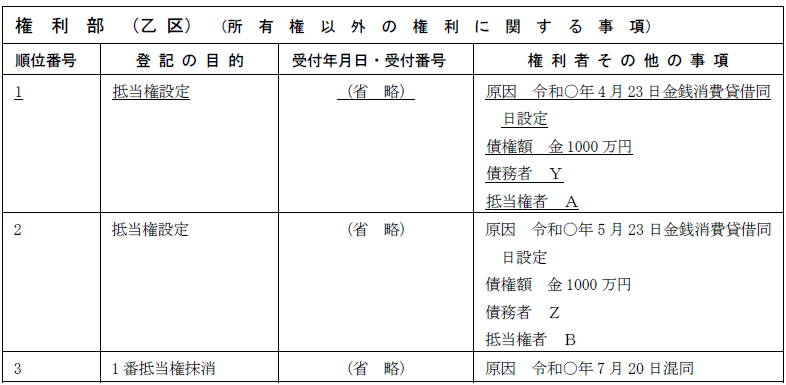
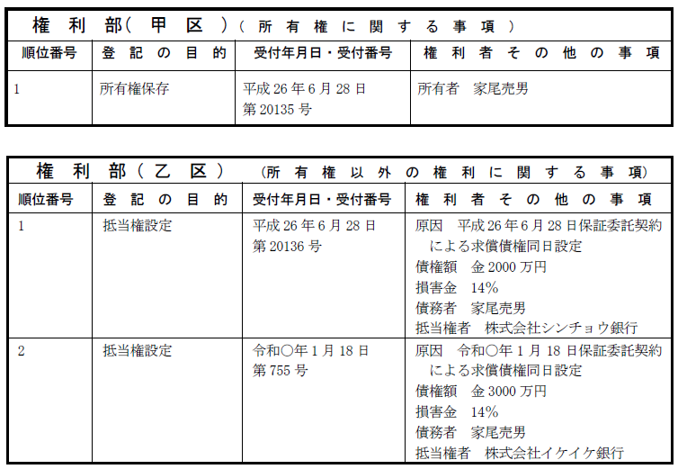
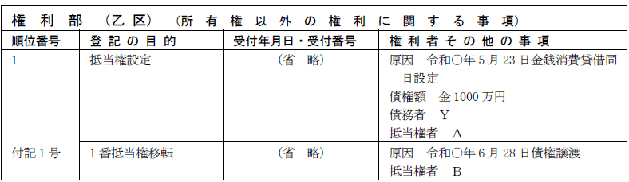
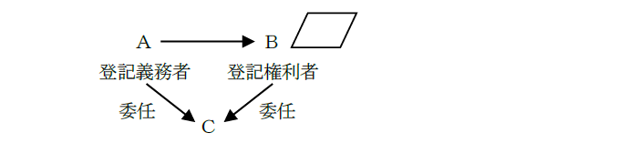

第１編 各 論
第11章 更正・抹消等
第３節 抹消回復登記
抹消回復登記とは、不適法な原因に基づいて抹消された登記を回復し、抹消されなかったのと同様の効果を発生させる登記である。
抹消回復登記の申請がなされると抹消回復の登記がされた後、抹消された登記と同一の登記がなされる。
1つの登記すべてを回復する場合には主登記でされるが、登記事項の一部を回復する場合には付記登記により行われる（不登規3条3号）。
1. 抹消回復登記の対象
(1) 仮登記
仮登記は、本登記の順位保全の効力を有するとともに、この順位保全を公示して一般に警告することを目的とするものであるから、本登記の不法抹消について回復登記を許すのに準じて、仮登記の不法抹消についても回復登記を許すのが相当である（最大判昭43.12.4参照）。
(2) 登記が実体関係に合致しているとき
登記が、不法に抹消された場合でも、その回復に係る権利が回復当時消滅し、登記が実体関係に合致しているときは、抹消回復登記は認められない（東京高判昭30.6.29）。
2. 申請人
抹消回復登記は、登記権利者と登記義務者の共同申請によって行う。
①登記権利者：回復される登記の登記名義人
②登記義務者：回復により、登記記録上直接に不利益を受ける者
ex.抹消された抵当権の登記の回復の登記をする場合には、登記権利者は抹消された抵当権の抵当権者であり、登記義務者は目的不動産につき所有権移転登記がなされている場合は、現在の所有権登記名義人である（昭57.5.7民3.3291）。
3. 利害関係人の承諾
抹消された登記（権利に関する登記に限る。）の回復は、登記上の利害関係を有する第三者がある場合には、当該第三者の承諾があるときに限り、申請することができる（72条）。よって、抹消回復登記の申請においては、登記上の利害関係を有する第三者がある場合には、申請書と併せて、当該第三者の承諾書を提供しなければならない（72条）。
登記上の利害関係を有する第三者とは、抹消された登記が回復されることにより、登記の形式上不利益を受ける者をいう。
なお、不適法に抹消された登記の回復における、登記上利害関係のある第三者の承諾義務については、不法に抹消された場合も対抗力は消失しないから、第三者は善意悪意を問わず承諾義務を負うという判例（最判昭36.6.16、最大判昭43.12.4参照）がある。
①抵当権設定登記及び強制競売による差押えの登記が順次なされた後、差押えの登記の抹消及び所有権移転請求権の仮登記が順次なされている場合、裁判所が錯誤を原因として差押えの登記の抹消回復登記を嘱託する場合には、差押えの登記の抹消後に権利を取得した仮登記名義人は、登記上の利害関係を有する第三者に該当するか？

→差押えの登記の抹消後に権利を取得した仮登記名義人は、登記上の利害関係を有する第三者に該当する（昭39.11.20民甲3756）。
抹消回復により仮登記権利者の権利が否定され得るからである。
②仮差押えの登記後、当該登記の抹消前に所有権の移転の登記をした現在の所有権の登記名義人は、抹消された当該仮差押えの登記の抹消回復の登記における登記上の利害関係を有する第三者に該当するか？
→該当する（昭32.12.27民甲2439参照）。
③抹消された抵当権を回復する登記を申請する場合において、その抵当権の抹消登記後に登記された抵当権の登記名義人は登記上の利害関係人に該当するか？
→該当する。根抵当権であっても同様である（昭52.6.16民3.2932）。
④抹消した所有権移転仮登記の回復登記の申請をするには、抹消当時次順位にあった仮登記名義人の承諾情報を申請情報と併せて提供しなければならないか？

→提供しなければならない（昭29.8.27民甲1539）。
⑤Ａのための抵当権設定の登記（順位2番）の後、Ａ、Ｂのための各根抵当権設定登記が同順位（順位3番）でなされている場合において、登記官がＡの順位2番の登記を抹消すべきところ、過誤によりＡの順位3番の登記を抹消したときは、職権で抹消回復の登記をすることができるか？

→その回復の登記についてＢは登記上の利害関係人に該当しないので、職権で抹消回復の登記をすることができる（昭39.8.10民甲2737）。
⑥権利混同を原因として抵当権の登記を抹消した後は、職権で抹消回復の登記をすることができないが、抹消登記がなされる前に登記されている後順位抵当権の登記名義人は、抹消された抵当権の登記の回復についての利害関係人に該当するか？

→該当しない（昭41.10.6民甲2898）。
後順位抵当権が存在するため混同の例外（民法179条1項ただし書）に当たり、先順位抵当権が消滅しないことは登記記録上明らかであるので、不当な抹消であることが明らかだからである。
第２編 総 論
第１章 主登記・付記登記
1. 意義
独立の順位番号を付してなされる登記
登記は原則として、主登記の形式でする。
ex.所有権移転登記、抵当権設定登記
2. 順位
権利の順位は、主登記の前後による（4条1項）。
ex.以下のような登記がされている不動産が競売されて競売代金が1500万円だったとすると、株式会社シンチョウ銀行は1500万円を回収できるが、株式会社イケイケ銀行はこの競売代金からは1円も回収できない。

3. 注意を要する主登記
①抹消登記
②敷地権たる旨の登記（敷地権の種類にかかわらない）
③抵当権の順位変更の登記
④根抵当権（所有権を目的とする）の分割譲渡の登記（不登規165条1項）
⑤仮登記所有権の移転の仮登記
⑥不動産が工場財団に属した旨の登記
⑦抵当権設定の登記の破産法による否認の登記
抵当権設定登記の破産法による否認の登記は、抹消登記に準ずるため、主登記によってなされる。
破産法による否認の登記とは、破産者の行為の効力が管財人の否認権行使によってその効力を失った場合に、破産法が抹消登記に代えて認めた特別の登記である。
1. 意義
権利に関する登記のうち、既にされた権利に関する登記についてする登記であって、それ自身として既存の登記に続く独立の順位番号をもたず、既存のある特定の主登記の順位番号をそのまま用い、ただこの番号に枝番号（「付記何号」等）を付してなされる登記である。
※付記登記の例

2. 付記登記の順位
付記登記は、既存の登記（主登記）に付随してされることによって、既存の登記内容の一部を変更し、あるいは、既存の登記と同一の順位を維持したままそれによって公示される権利の帰属主体の変更を公示するものであるから、付記登記によって加えられた既存の登記の変更事項には、既存の登記（主登記）と一体となってそれと同一の順位が認められる（4条2項）。
同一の主登記に係る付記登記の順位は、その前後による（4条2項）。
ex.地上権を目的として、複数の抵当権が設定される場合
3. 付記登記で実行される登記の具体例
付記登記は例外的なものであるから、付記登記によると法定されている場合にのみ行われる。不動産登記規則3条に、付記登記による場合が規定されている。
付記登記による場合は、以下の3種類に分類できる。
(1) 性質上、主登記と同一順位にする必要がある場合
・登記名義人の氏名若しくは名称又は住所についての変更の登記又は更正の登記（不登規3条1号）
・権利の一部抹消回復の登記（不登規3条3号）
・所有権以外の権利を目的とする権利の登記（処分の制限の登記を含む）（不登規3条4号）
ex.所有権移転請求権を目的とする処分禁止の仮処分の登記
・所有権以外の権利の移転の登記（不登規3条5号）
・抵当権の処分の登記（民法376条2項）
・地上権・賃借権が工場財団に属した旨の登記（昭54.3.31民3.2112）
(2) 主登記の順位をそのまま維持させたい場合
・不動産登記法66条に規定する場合における権利の変更の登記又は更正の登記（不登規3条2号）
・債権の分割による抵当権の変更の登記（不登規3条2号イ）
(3) 権利関係を公示上明確にするため、法律が付記登記以外の登記の形式を認めない場合
・買戻しの特約の登記（不登規3条9号）
・権利消滅の定めの登記（不登規3条6号）
・根抵当権者又は債務者の相続による合意の登記（不登規3条2号ロ）
・所有権以外の権利を目的とする根抵当権の分割譲渡の登記（不登規3条5号、165条1項括弧書）
・根抵当権の共有者間の優先の定めの登記（不登規3条2号ニ）
・根抵当権の極度額の変更登記又は更正登記（昭46.10.4民甲3230）
・共同（根）抵当権の次順位者の代位の登記（不登規3条7号）
1. 権利の変更の登記又は更正の登記
権利の変更の登記又は更正の登記は、登記上の利害関係を有する第三者がいる場合において、その承諾がないときは、主登記でなされ、登記上の利害関係を有する第三者の承諾がある場合及び当該第三者がいないときに限り、付記登記でなされる（66条）。
2. 具体例
①抵当権の債権額の変更又は更正
ex.抵当権の債権額を増額する変更登記を申請する場合に、後順位抵当権者の承諾を証する情報を提供できないときは、当該変更の登記は主登記でされる。
②抵当権の利息の特別登記
③抵当権の利息の利率を上げる変更又は更正
第２章 申請手続全般
第１節 申請人等
登記権利者及び登記義務者の意義や、一般承継人による申請については既に触れているため、ここでは、代理人による申請について補足する。
1. 法定代理人による申請
(1) 申請の可否
未成年者等が登記申請人である場合、法定代理人が代理して、登記を申請することができる。
なお、登記申請行為は法律行為ではないため、意思能力のある未成年者であれば、未成年者自身が単独で登記申請をすることができる。ただし、登記申請の前提となる法律行為（売買など）については、法定代理人の同意書を提供することとなる。また、被保佐人・被補助人も意思能力があるので登記を申請することができるが、成年被後見人は意思能力がないので登記を申請することはできない。
(2) 具体例
未成年者が不動産の贈与を受けた場合には、法定代理人の同意を要せずして、その所有権取得の登記を申請することができるか？
→ できる（明32.6.27民刑1162）。
負担のない贈与を受けることは、「単に権利を得、又は義務を免れる法律行為」（民法5条1項ただし書）に当たるからである。
2. 任意代理人による申請
(1) 司法書士（弁護士）への委任
登記の申請人は、登記の申請に関し、代理人（権利の登記は司法書士又は弁護士）に委任することができる。
ex.ＡがＢに土地を売却した場合

ＡとＢは、共同して登記を申請することが可能であり、また、司法書士Ｃに委任して登記を申請してもらうことも可能である。
(2) 複数の代理人への委任
委任状の記載から、複数の代理人が選任されていることが明らかな場合には、特に共同代理の定めがされていない限り、当該代理人は、各自単独で登記の申請をすることができる（昭40.8.31民甲2476）。
(3) 登記義務者から登記権利者への登記申請の委任の可否
登記の申請について、当事者の一方である登記権利者が、他方の当事者である登記義務者の委任を受けて、当該登記義務者の代理人として当該登記の申請をすることができる。
同一の法律行為については、相手方の代理人となることができない（民法108条1項。代理行為をした場合は無権代理行為とみなされる）。しかし、当該行為が債務の履行にあたる場合には、代理人となることができる（民法108条1項ただし書）。そして、登記の申請は、債務の履行にあたる（最判昭43.3.8）。よって、登記権利者は、登記義務者の代理人として登記の申請をすることができる。
3. 代理権の不消滅
(1) 意義
登記の申請をする者の委任による代理人の権限は、 以下の事由によっては、消滅しない（17条）。
①本人の死亡
②本人である法人の合併による消滅
③本人である受託者の信託に関する任務の終了
④法定代理人の死亡又はその代理権の消滅若しくは変更
この「法定代理人」には、法人の代表者も含まれる（平5.7.30民3.5320）。
（趣旨）
委任による登記申請の代理は、申請人の意思がほぼ確実に形成された後、登記の申請を代理人が遂行する場合であるため、代理人の裁量判断の余地は少なく、また、速やかに権利変動について対抗要件を具備させる必要があることから、不動産登記法17条は、本人の死亡等にかかわらず、代理権が消滅しない場合を規定した。
(2) 注意点
ⅰ 登記の申請の委任を受けた者であっても、申請前に代理権が消滅した場合には、委任を受けた登記の申請をすることはできない。
ⅱ 登記申請の委任を受けた代理人が更に当該登記申請を復代理人に委任した後に、最初の代理人が死亡した場合、復代理人の権限は消滅しない。
そして、復代理人が登記を申請する場合、最初の代理人が復代理人に代理権を授与した旨を内容とする代理権限証明情報を提供してすることができる（昭34.6.19民甲1267）ので、本人が直接復代理人に代理権を授与した旨をも内容とする代理権限証明情報を申請情報と併せて提供することを要しない。
書面申請をした申請人は、申請に係る登記が完了するまでの間、申請書及びその添付書面の受領証の交付を請求することができる（不登規54条1項）。
当該規定は相続人書面申出をした申出人に準用されるため、相続人書面申出をした申出人は、申出に係る登記が完了するまでの間、相続人申出書及びその相続人申出等添付書面の受領証の交付を請求することができる（不登規158条の12）。
第２節 共同申請と単独申請
1. 意義
権利に関する登記の申請は、原則として、登記権利者及び登記義務者が共同してしなければならない（60条）。
2. 趣旨
利害の対立する当事者（特に、登記記録上不利益を受ける登記義務者）を登記手続に関与させることで、登記の真実性を確保するためである。
3. 申請人の全員が登記権利者であり、かつ登記義務者である場合
共同申請においては、申請人の一方が登記権利者、他方が登記義務者となって申請することが一般的であるが、中には、申請人の全員が登記権利者かつ登記義務者として申請する場合もある。
ex.共有物分割禁止の定めの登記（65条）を所有権変更の登記として申請する場合
4. いわゆる合同申請
当事者全員が「申請人」として、申請するものがある。これをいわゆる「合同申請」という。
ex1.担保権の順位の変更、その抹消の登記（89条1項）
ex2.根抵当権の共有者間の優先の定め、その変更、抹消の登記（89条2項）
登記の性質上、登記権利者、登記義務者がそもそも理論的に存在しないか、登記義務者が存在してもこれと共同して申請できない事情がある場合は、例外的に単独申請が認められている（60条）。
| ・ | 単独申請ができる登記 | 申請人 | 根拠条文 |
| ① | 登記手続をすべきことを命ずる確定判決による登記 | 不動産登記法の規定により共同申請すべき一方の者に対して登記手続をすべきことを命ずる確定判決を得た他方の者 | 63条1項 |
| ② | 相続又は法人の合併による権利移転の登記 | 当該移転登記の登記権利者 | 63条2項 |
| ③ | 相続人に対する遺贈による所有権の移転の登記 | 当該移転登記の登記権利者 | 63条3項 |
| ④ | 登記名義人の氏名若しくは名称又は住所についての変更又は更正の登記 | 当該登記名義人 | 64条1項 |
| ⑤ | 抵当証券が発行されている場合における債務者の氏名若しくは名称又は住所についての変更又は更正の登記 | 当該債務者 | 64条2項 |
| ⑥ | 権利が人の死亡又は法人の解散によって消滅する旨が登記されている場合に、その死亡又は解散によって権利が消滅したときの権利の抹消登記 | 当該抹消登記の登記権利者 | 69条 |
| ⑦ | 買戻の契約の日から10年経過後の買戻権の抹消登記 | 当該抹消登記の登記権利者 | 69条の2 |
| ⑧ | 地上権、永小作権、質権、賃借権、採石権の存続期間又は買戻権の買戻期間が満了し、共同して登記の抹消を申請すべき者の所在が知れない場合に、除権決定があったときの権利の抹消登記 | 当該抹消登記の登記権利者 | 70条2項、3項 |
| ⑨ | 共同して登記の抹消を申請すべき者の所在が知れない場合に、除権決定があったときの権利の抹消登記 | 当該抹消登記の登記権利者 | 70条3項 |
| ⑩ | 共同して登記の抹消を申請すべき者の所在が知れない場合に、先取特権、質権又は抵当権の被担保債権が消滅したことを証する情報を提供したときの当該権利の抹消登記 | 当該抹消登記の登記権利者 | 70条4項前段 |
| ⑪ | 共同して登記の抹消を申請すべき者の所在が知れない場合に、先取特権、質権又は抵当権の被担保債権の弁済期から20年を経過し、かつ、その期間を経過した後に当該被担保債権、その利息及び債務不履行により生じた損害の全額に相当する金銭が供託されたときの当該権利の抹消登記 | 当該抹消登記の登記権利者 | 70条4項後段 |
| ⑫ | 共同して登記の抹消の申請をすべき法人の解散の日から30年を経過し、70条2項に規定する調査を行っても清算人の所在が判明しないためその法人と共同して先取特権、質権又は抵当権の登記の抹消を申請できない場合において、被担保債権の弁済期から30年を経過したときの当該権利の抹消登記 | 当該抹消登記の登記権利者 | 70条の2 |
| ⑬ | 所有権保存登記 | 74条に掲げる申請適格者 | 74条 |
| ⑭ | 所有権移転登記がない場合における所有権保存登記の抹消登記 | 当該所有権の登記名義人 | 77条 |
| ⑮ | 民法398条の19第2項に基づく根抵当権の元本確定の登記 | 当該根抵当権の登記名義人 | 93条 |
| ⑯ | 民法398条の20第1項3号又は4号に基づく根抵当権の元本確定の登記で、当該根抵当権又はこれを目的とする権利取得の登記の申請と併せてするもの | 当該根抵当権の登記名義人 | 93条 |
| ⑰ | 信託の登記 | 受託者 | 98条2項 |
| ⑱ | 受託者の任務が死亡、後見開始若しくは保佐開始の審判、破産手続開始の決定、法人の合併以外の理由による解散又は裁判所若しくは主務官庁の解任命令により終了し、新たに受託者が選任されたときの受託者の変更による権利移転の登記 | 新たに選任された受託者 | 100条1項 |
| ⑲ | 受託者が2人以上ある場合に、そのうち少なくとも1人の受託者の任務が100条1項に規定する事由により終了したときの当該受託者の任務終了による権利の変更の登記 | 任務終了しない他の受託者 | 100条2項 |
| ⑳ | 信託の登記の抹消登記 | 受託者 | 104条2項 |
| ㉑ | 登記義務者の承諾がある場合の仮登記 | 当該仮登記の登記権利者 | 107条1項 |
| ㉒ | 仮登記を命ずる処分があるときの仮登記 | 当該仮登記の登記権利者 | 107条1項、108条 |
| ㉓ | 仮登記の抹消登記 | 当該仮登記の登記名義人又は当該仮登記の登記名義人の承諾がある場合における当該仮登記の登記上の利害関係人 | 110条 |
| ㉔ | 所有権について処分禁止の登記がされた後に、仮処分債権者が仮処分債務者を登記義務者とする所有権の登記を申請する場合において、処分禁止の登記に後れる登記の抹消登記 | 仮処分債権者 | 111条1項 |
| ㉕ | 所有権以外の権利について処分禁止の登記がされた後に、仮処分債権者が仮処分債務者を登記義務者としてする当該所有権以外の権利の移転又は消滅に関する登記を申請する場合において、処分禁止の登記に後れる登記の抹消登記 | 仮処分債権者 | 111条2項 |
| ㉖ | 不動産の使用又は収益をする権利について保全仮登記がされた後に、仮処分債権者が本登記を申請する場合に、所有権以外の不動産の使用若しくは収益をする権利又は当該権利を目的とする権利に関する登記で当該保全仮登記とともにした処分禁止の登記に後れるものの抹消登記 | 仮処分債権者 | 113条 |
| ㉗ | 収用による所有権移転登記 | 起業者 | 118条1項 |
| ㉘ | 工場財団の消滅の登記 | 工場財団の所有者 | 工場抵当法44条の2本文 |
※当事者の申請による登記ではないが、嘱託による登記も官公署の単独申請による（116条）。